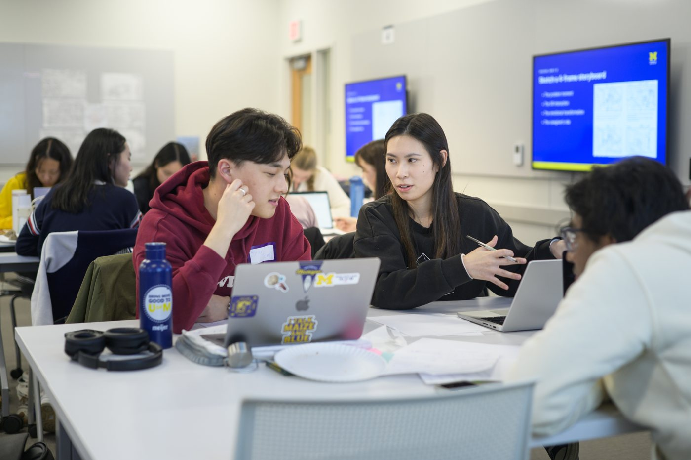
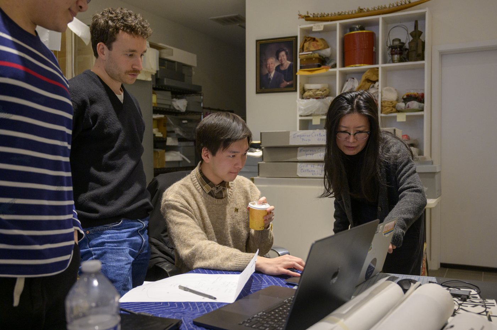

Manage Your Engaged Learning Experience

During an engaged learning experience, students manage projects, communicate with partners, respond to
challenges, and reflect on their learning. The work may change as your team learns more about the partner's
needs and the people affected by the project. Continue checking your assumptions, documenting decisions, and
connecting your daily tasks to the goals you established at the beginning.
Key Skills During the Experience
01Communicate with Partners
Share updates clearly, ask questions, listen carefully, and confirm that everyone understands the project
goals. Provide partners with timely information about progress, decisions, risks, and changes in scope. Use
accessible language, avoid unnecessary technical terms, and make space for the partner to give feedback before
your team moves too far in one direction.
02Manage Projects and Teams
Track responsibilities, organize deadlines, and communicate with teammates when project needs change. Break
large deliverables into smaller tasks, assign clear owners, and review progress regularly. Keep shared notes
about decisions and next steps so that everyone can participate, understand the current status, and recognize
when the original plan needs to be adjusted.
03Respond to Challenges
Engaged learning projects may include unexpected problems. Use feedback, ethical decision-making, and
collaborative problem-solving to move forward. Pause to identify what changed, who may be affected, and what
information is still missing before choosing a response. Discuss options with your teammates and partner,
consider possible risks or unintended consequences, and revise the plan when evidence shows that a different
approach will create better value.
04Reflect on Learning
Consider how the experience is changing your skills, perspective, understanding of the community, and
approach to future projects. Reflect throughout the project instead of waiting until the final deliverable.
Record moments of uncertainty, feedback that changed your thinking, and skills you are developing. Connect
these observations to your learning goals and use them to make more thoughtful decisions during the remaining
work.

Resources to Keep Your Project Moving
Reflect and Hand Off Your Work
As your experience ends, use your project notes to review what you learned and prepare a useful handoff.
- Confirm the handoff: Agree with your partner on the final files, instructions, and any remaining limitations.
- Review your learning: Compare your original goals with the skills you practiced, feedback you received, and results you can describe.
- Share responsibly: Ask permission before using partner materials or project results in a portfolio or presentation.